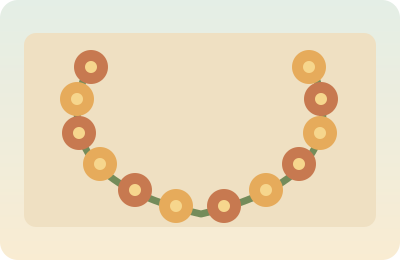

यमक और श्लेष
Word repetition and double meaning
Audio uses your device’s Hindi voice; availability varies. No native recordings included.आज का नियम
Understand the conceptयमक और श्लेष का विवेचन शब्द के अर्थ और प्रयोग की संख्या से करें। अस्पष्ट उदाहरण को बिना पर्याप्त पाठगत आधार निश्चित श्रेणी में न रखें।
शब्द और अर्थ
Vocabularyवाक्य प्रयोगशाला
Sentence labसही विकल्प चुनें, फिर कारण पढ़ें।
उत्तर और कारण
यमक — एक रूप के अलग अर्थ।
उदाहरण और पठन
Examples & readingमोतियों का हार देखकर हार का दुख भूल गया।
कमल एक फूल और किसी का नाम हो सकता है।
दो अर्थ स्पष्ट करने के लिए संदर्भ चाहिए।
हर बहुअर्थी शब्द श्लेष नहीं बनता।
विस्तृत पठन
Extended reading
शब्दों का खेल
मंच पर वक्ता ने कहा कि हार पहनने से हार का दुख दूर नहीं होता। श्रोताओं ने पहले हार को फूलों की माला और दूसरे को पराजय के अर्थ में समझा। फिर वक्ता ने कहा, चंचल चिड़िया चहकती चली। यहाँ किसी शब्द के दो अर्थ नहीं थे, लेकिन च ध्वनि की बार-बार उपस्थिति ने पंक्ति को लय दी। दोनों उदाहरण भाषा में ध्वनि और अर्थ के अलग प्रकार के खेल दिखाते हैं।
पठन-बोध
दोनों हार का अर्थ क्या है?
माला और पराजय।
हार के उदाहरण में कौन-सा अलंकार संभव है?
यमक, क्योंकि समान शब्द रूप अलग अर्थ में दोहराया गया है।
चंचल चिड़िया में कौन-सा?
अनुप्रास।
बोलें और सोचें
Apply itहार के दो अर्थों पर स्पष्ट शब्दक्रीड़ा बनाएं।
लेखन अभ्यास
Writing practiceउदाहरण को आधार बनाकर अपने स्वतंत्र वाक्य या अनुच्छेद लिखें।
स्वतंत्र लेखन कक्ष
Writing workspaceअपना ज्ञान जाँचें
Check your learningयमक और श्लेष में मूल अंतर?
उत्तर देखें
यमक में रूप की पुनरावृत्ति और भिन्न अर्थ; श्लेष में एक प्रयोग से अनेक अर्थ संभव।
इस पाठ में दिए गए अर्थ से शब्द मिलाएँ: repeated word with different meanings
उत्तर
यमक
Completion is self-marked and saved locally.